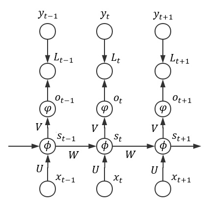

RNN 中的BPTT算法
注：统一使用”*”表示element wise乘法，使用表示矩阵乘法。
公式推导

有上图可知,
根据以上的推导，可以得到U,W参数对应的局部梯度：
补充知识:
根据交叉熵损失函数的梯度公式可得:
根据sigmoid激活函数的梯度公式可得:
从而，上式(1.4)可写成：
式(1.5)可写成:
式(1.6)可写成:
代码实现
1 | def bptt(self, x, y): |
完整的RNN类
1 | class RNNNumpy(object): |
参考文献
- Softmax with cross-entropy derivative
- Recurrent neural network based language model
- The Unreasonable Effectiveness of Recurrent Neural Networks
- Recurrent Neural Networks Tutorial, Part 1 – Introduction to RNNs
- Implementing a Neural Network from Scratch in Python – An Introduction
- On the difficulty of training recurrent neural networks
- Recurrent Neural Networks Tutorial, Part 2 – Implementing a RNN with Python, Numpy and Theano
- 数学 · RNN（二）· BPTT 算法